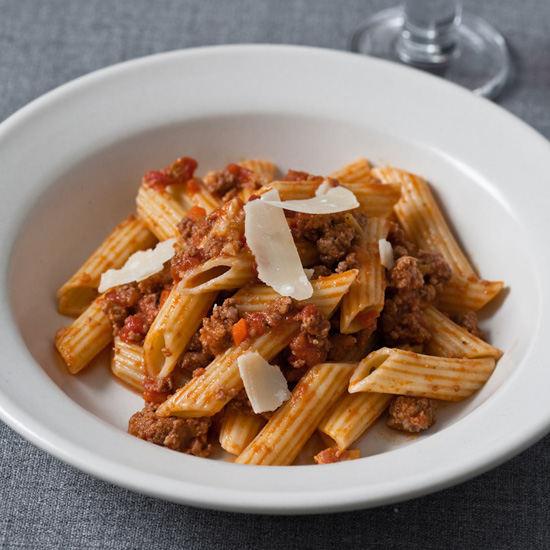

Pasta Bolognese

Penne Pasta with Beef Bolognese
Pasta bolognese is a very quick and simple disk to make, the most simple version can be made using just 3 items from your fridge and pantry! it's great for a quick filling snack that can fill the stomach, or make a large batch of it to have meals ready to be eaten for the rest of the week.
Ingredients
- Penne Pasta
- Beef Mince
- Jar of Bolognese sauce
- salt
- parmesan cheese(optional)
- garnish(optional)
Cooking steps
- Bring a pan of water to the boil
- add in the pasta (and a pinch of salt to stop the pasta sticking) and let simmer for 7 minutes
- While the pasta is cooking, heat a teaspoon of oil into a frying pan and fry your mince (season if you like), once cooked set aside until pasta is cooked
- After frying the mince, put the bolognese sauce in a pan and cook, stirring occasionally until hot
- Once pasta is cooked, strain the pasta to remove the water, then spoon the pasta onto a plate or into a bowl
- take your mince and put it into to pan of bolognese sauce, stir it to mix it in and spoon onto your pasta
- Garnish with a little parmesan cheese or some herbs to add to the flavour
- Enjoy your meal!